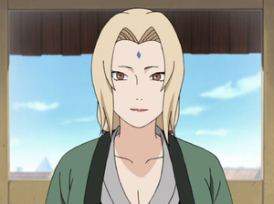

Tsunade (綱手) is a descendant
of the Senju and Uzumaki Clan, and is one of Konohagakure's Sannin. She is famed as the world's strongest
kunoichi and its greatest medical-nin. The repeated loss of her loved ones caused Tsunade to later abandon the
life of a shinobi for many years. She is eventually persuaded to return to Konoha and take on the mantle of
Fifth Hokage (五代目火影, Godaime Hokage, Literally meaning: Fifth Fire Shadow), where her skills prove invaluable to
the village.
Background
 Tsunade is the granddaughter of Hashirama Senju and Mito Uzumaki. Because
Hashirama was the First Hokage of Konohagakure, Tsunade is called "Princess" (姫, Hime). Hashirama doted on
Tsunade when she was very young because she was his first grandchild, and found her deviance and her adoption of
his own gambling habits highly amusing. Tsunade inherited his necklace when he died. After she graduated from
Konoha's Academy, Tsunade was teamed with Orochimaru and Jiraiya under the leadership of Hiruzen Sarutobi. When
Jiraya failed to acquire a bell during the team's first bell test, Tsunade teased him, prompting him to
criticise her flat chest. Despite this remark, Jiraiya had a certain interest in Tsunade from their first
meeting, which only increased after her breasts developed; when she nearly killed him for spying on her while
she bathed, he was forced to be more discrete about his interests.
Tsunade is the granddaughter of Hashirama Senju and Mito Uzumaki. Because
Hashirama was the First Hokage of Konohagakure, Tsunade is called "Princess" (姫, Hime). Hashirama doted on
Tsunade when she was very young because she was his first grandchild, and found her deviance and her adoption of
his own gambling habits highly amusing. Tsunade inherited his necklace when he died. After she graduated from
Konoha's Academy, Tsunade was teamed with Orochimaru and Jiraiya under the leadership of Hiruzen Sarutobi. When
Jiraya failed to acquire a bell during the team's first bell test, Tsunade teased him, prompting him to
criticise her flat chest. Despite this remark, Jiraiya had a certain interest in Tsunade from their first
meeting, which only increased after her breasts developed; when she nearly killed him for spying on her while
she bathed, he was forced to be more discrete about his interests.
Tsunade's younger
brother, Nawaki dreamed of someday becoming Hokage so that he could protect Konoha, their grandfather's legacy.
On Nawaki's twelfth birthday, Tsunade kissed his forehead and gave him Hashirama's necklace in the hopes that it
would help him achieve his dream. He died the next day, a casualty of the ongoing Second Shinobi World War, thus
returning the necklace to her. Tsunade began advocating for the inclusion of medical-nin on all four-man squads
in order to avoid future deaths like Nawaki's. Hiruzen, the Third Hokage, agreed with her arguments, but could
not dedicate resources to the necessary implementation due to the ongoing war. Dan Katō, on the other hand,
shared her views, and as their relationship developed he confided with her his dreams of becoming Hokage so that
he could bring change to Konoha and protect his loved one from death. Tsunade kissed his forehead and gave him
Hashirama's necklace in the hopes that it would help him achieve his dream.
>Previous
Page
>Home Page